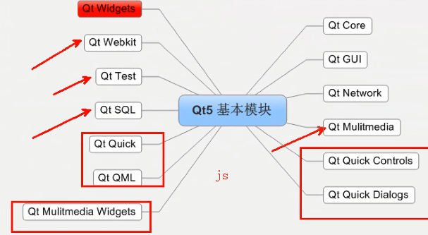

什么是QT
QT是一个跨平台的C++图形用户界面应用程序框架。
一、QT应用程序框架
#ifndef MYWIDGET_H
#define MYWIDGET_H
#include <QWidget>
class MyWidget : public QWidget
{
Q_OBJECT
public:
MyWidget(QWidget *parent = 0);
~MyWidget();
};
#endif // MYWIDGET_H
#include "mywidget.h"
//QApplication应用程序类
//Qt头文件没有.h
//头文件和类名一样
#include <QApplication>
int main(int argc, char *argv[])
{
//有且只有一个应用程序类的对象
QApplication a(argc, argv);
//MyWidget继承与QWidget，QWidget是一个窗口基类
//所以MyWidget也是窗口类
//w就是一个窗口
MyWidget w;
//窗口创建默认是隐藏，需要人为显示
w.show();
//aexec()让程序一直执行，等待用户操作
return a.exec();
}
二、项目文件
#模块
QT += core gui
#高于4版本，添加 QT += widgets，为了兼容Qt4
greaterThan(QT_MAJOR_VERSION, 4): QT += widgets
#应用程序的名字
TARGET = 01-QtTest
#指定makefile的类型，app
TEMPLATE = app
#源文件 .cpp文件
SOURCES += \
main.cpp \
mywidget.cpp
#头文件 .cpp文件
HEADERS += \
mywidget.h

实例
设置窗口标题
QWidget w;
w.setWindowTitle("Hello Wolrd");
w.show();
设置按钮
#include<QPushButton>
QPushButton b;
b.setText("^_^"); //给按钮设置内容
b.setParent(&w); //指定父对象
//QPushButton b1(&w) 通过构造函数传参指定父对象
b.move(100,100); //移动坐标
b.show();
/*
*如果不指定父对象，对象和对象（窗口和窗口）没有关系，独立
*a指定b为它的父对象，a放在b上面
*指定父对象：
（1）setParent
（2）通过构造函数传参
*指定父对象，只需父对象显示，上面的子对象自动显示
*/
标准信号和槽
#ifndef MAINWIDGET_H
#define MAINWIDGET_H
#include <QWidget>
#include <QPushButton>
class MainWidget : public QWidget
{
Q_OBJECT
public:
MainWidget(QWidget *parent = 0);
~MainWidget();
private:
QPushButton b1;
QPushButton *b2;
};
#endif // MAINWIDGET_H
#include "mainwidget.h"
MainWidget::MainWidget(QWidget *parent)
: QWidget(parent)
{
b1.setParent(this);
b1.setText("^_^");
b1.move(100,100);
b2 = new QPushButton(this);
b2->setText("^_^");
b2->show();
connect(&b1,&QPushButton::pressed,this,&MainWidget::close);
//&b1：信号发出者，指针类型
//&QPushButton::pressed：处理的信号，&发送者的类名::信号名字
//this：信号接收者
//&MainWidget::close: 槽函数，信号处理函数 &接收的类名::槽函数名字
}
MainWidget::~MainWidget()
{
}
自定义槽
自定义槽，普通函数的用法
Qt5：任意的成员函数，普通全局函数，静态函数
槽函数需要和信号一致（参数，返回值）
由于信号都是没有返回值的，所以，槽函数一定没有返回值
connect(b2,&QPushButton::released,this,&MainWidget::myslot);
void MainWidget::myslot()
{
b2->setText("123");
}
connect(b2,&QPushButton::released,&b1,&QPushButton::hide);
//信号：短信
//槽函数：接收短信的手机
两个独立的窗口
再建一个窗口类(subwidget)，继承QWidget，在mainwidget中定义一个subwidget对象，
在mainwidget中自定义槽函数，用来接收信号，切换到子窗口
#include "subwidget.h"
SubWidget::SubWidget(QWidget *parent) : QWidget(parent)
{
setWindowTitle("xiaodi");
b.setParent(this);
b.setText("切换到主窗口");
}
mainwidget下
connect(&b3, &QPushButton::released, this, &MainWidget::changeWin);
void MainWidget::changeWin()
{
w.show(); //显示
this->hide(); //隐藏
}
自定义信号
//（.h）
signals:
/*信号必须有signals关键字来声明
*信号没有返回值，但可以有参数
*信号就是函数的声明，只需声明，无需定义
*使用：emit mySignal();
*/
void mySignal();
//（.cpp）然后创建连接，点击， 执行槽函数sendSlot发送信号mySignal
connect(&b, &QPushButton::clicked, this, &SubWidget::sendSlot);
//实现自定义槽函数sendSlot
void SubWidget::sendSlot()
{
emit mySignal();
}
这样，一点击就会从SubWidget发射出mySignal()信号
//在MainWidget.cpp中建立连接，接收信号
connect(&w, &SubWidget::mySignal, this, &MainWidget::dealSub);
//实现自定义槽函数dealSub
void MainWidget::dealSub()
{
w.hide();
this->show();
}
信号与槽：是QT对象通信的接口
resize(400,300); //设置窗口大小，可在构造函数中设置